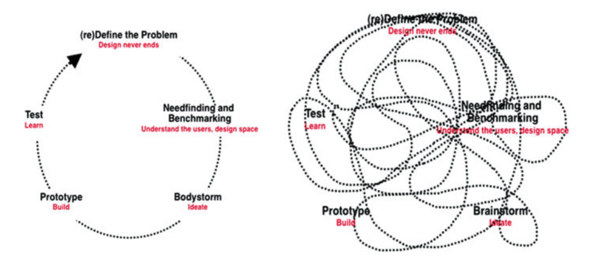
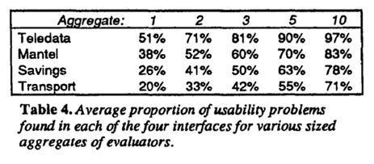

Bubbler is a project that aims to solve the journalism issue of ‘filter bubble’. The ‘filter bubble’ refers to the problem that users are being given news content that validates their current biases, rather than challenges them to new insights or new ways of thinking. Bubbler aims to create a politically diverse news feed by user-led organisation of community submitted articles.
Research has shown that communities who are given exposure to one viewpoint can change political leanings, and can even change voting habits. DellaVigna & Kaplan conducted a study on how voting habits can change in relation to exposure to the TV new station Fox News, a traditionally conservative news source: “We find a significant effect of the introduction of Fox News on the vote share in Presidential elections between 1996 and 2000. Republicans gained 0.4 to 0.7 percentage points in the towns that broadcast Fox News” (DellaVigna & Kaplan, 2007). This shows that political news does indeed have an influence on readers. Bubbler aims to reduce the influence of media outlets by presenting multiple news outlets with opposing viewpoints. When users are exposed to multiple viewpoints, they are forced to consider both when coming to a consensus, and thus escaping the ‘filter bubble’.
Increasingly there is a divide between what the users expect from a media outlet in terms of impartiality and integrity and what the media outlet delivers. The ‘Hostile Media Effect’ is a theory that readers with strong political opinions perceive the media to be biased against their favour. Eveland & Shah conducted a study on the factors that come into play in media bias. They concluded that “individuals’ political orientations and social networks both play a significant role in shaping perceptions of media bias” (Eveland & Shah, 2003). Social networks play a large role in the perception of biased news, therefore we propose a new online social networking application that takes this into consideration by providing the user with multiple conflicting viewpoints, as well as a platform for varying discussion and debate.
Bubbler is a news aggregator, which means that it mimics the same functionalities as other news aggregators such as Flipboard and Reddit. What differentiates Bubbler from sites like Reddit is that Articles are sorted in a way such that there is an equal representation of left wing, right wing, and centrist articles. News articles are not sorted in descending order by the number of positive votes, but rather by the number of comments on the news articles. This combination of organisation strategies ensure that the news feed presents varied political leanings, allowing the user to make their own conclusions on who they agree with. Users can vote on what they perceive the bias of the news article to be. These community votes become the metric in how articles are sorted on the main page. Users can also leave comments on article posts, create accounts, view other accounts, and submit articles.
A prototype has been developed in order to explore the problem space as well as explore the viability of producing a solution to the problem.
Development involved brainstorming of ideas, sketching draft designs, performing usability tests with wireframes, and creating a high-fidelity interactive prototype for the web.
The first step of the design process was the brainstorming stage. This is the stage where the group members would come together and discuss initial thoughts on the idea, as well as any problems that the application would have to solve given the problem space. News articles would sort by number of comments to ensure discussion and healthy debate. This part of the stage was important to question whether the proposed solution would solve the intended problem should the problem really exist. I ensured that the brainstorming session would be thorough in order to get an impression of how the application would operate and function for the next stage.
I related my knowledge to the brainstorming stage with my previous experience with design courses at university. Instead of using brainstorming to conceptualise multiple ideas and solutions, I used brainstorming to hone in on a single concept that I had previously. This made for a lot of missed potential with other potentially simpler solutions to the problem, because I insisted on an idea without considering alternatives first. It also became apparent that the brainstorming stage would go beyond the first step. New ideas were being developed well after the first stage of development. Design is not a linear progression, but a complex cycle of ideation, design, and then iteration. These can happen in any order, and can even happen in tandem. The design process needs to account for this fundamental law in design processes.
Next, a digital designs draft of the proposed application was developed. Screens such as the main menu, article submission and the user login screen would be designed both in colour and with buttons in their intended area. Other group members contributed design sketches to help iterate upon the draft sketches. This ensures that every interaction is accounted for, and glaring issues in the idea will become apparent as the sketches are developed. Visual design and branding would be experimented with in order to provide the basis of interactions and usability principles. This part is typically done later in the design stage, but I moved this task earlier to act as a helpful guide to accounting for all interaction in the design.
The draft designs were inspired my similar experiences I had with design projects. A draft sketch, to my mind, ensured that designs were well thought out and interactions would start to be conceptualised. The draft sketches were found to be more restrictive, rather than helpful, in the design process. The draft sketches were much too detailed for an early design. This meant that I was less inclined to incorporate new ideas or new changes because it meant using a lot of time and effort to reflect the changes in the designs. I was also less inclined to consider alternative designs for the same application, even if they were proved to be superior designs. Any changes in the designs caused a lot of 'backtracking' in the process, which hindered progress, rather than helped it. Usability tests caused the design of the application to rapidly change, and the draft designs were not low-fidelity enough to accompany such changes.
Usability tests on prototype designs were conducted with sample user groups. These involved creating 'user journeys' where a set of relevant interactions would be mapped out, and the user would be able to carry out in one sitting. These user journeys formed the plan for usability tests. Usability tests ensure that all the intended interactions mapped out by the designer to the prototypes successfully communicate to the user. Usability tests will ensure that all design choices such as metaphors and affordances assist the user in navigating and operating the application. Usability testing is the core or user-centred design, in which applications are designed with the user's needs, not the developer. Initially, I placed the usability testing phase after the low-fidelity prototype was developed in order to gain the best impression of all intended user interactions, but further usability testing was conducted later due to more prototypes and iterations being developed.
My usability testing knowledge stemmed from web design and human-computer interaction courses. However, these tests were very limited. The prototypes I had developed for these courses were paper prototypes only, and test subjects only involved my close friends or my immediate family. Given this experience, I thought that applying that knowledge to a paper prototype will yield similar results. This experience was not suitable for gaining accurate usability testing data. Testing people that I previously knew meant that users were less inclined to critique my application as they knew I had created it. Furthermore, my immediate family and close friends were not the target audience for the application, which meant that the wrong user base was tested for the application. This resulted in inaccurate and skewed data which is not a reliable source for testing interaction of an application. Eventually, a sample test of users was found, but this was very late in the design process, which meant that the design was mostly done before the feedback collected from the real users could be fully recognised and realised. Also, the usability test was only planned to be conducted once in the design process, but this meant that further iterations were not tested. It was dangerous to assume that all design issues were accounted for and that the solutions suggested did in fact solve the problem. I feel that the project outcome was impacted negatively in this way.
In tandem with usability tests, prototypes are developed as the subject of these usability tests. A low-fidelity wireframe was developed in Invision, and a high-fidelity interactive prototype was developed in HTML and CSS. Feedback collected from the usability tests would provide direction for future iterations of the prototype. The prototype can be further iterated upon to eventually become the final product. Prototyping ensures rapid development of design decision which can be easily modified or discarded.
I felt like I had the most knowledge with prototyping, as I had been studying a course in digital prototyping concurrent to the project. The knowledge gained in this course helped me accurately produce minimal prototypes, as well as effectively test them. However, the course that I am enrolled in did not cover iterations over an existing prototype. The course’s structure meant that prototypes were tested in different forms, but not consistently in the same form. Because of this, I did not know how to properly create and apply iterations to a prototype once the feedback was collected. I knew how to collect data and draw conclusions from the usability, but I did not know how to change the prototype to solve the problem. Furthermore, I did not test these new iterations with a follow-up usability test, which meant that the prototype was not thoroughly tested to be usable.
Meinel et al. produced research on how design processes are conducted. They make the case that design is not a linear process with ‘stages’ to complete, but rather a complex repeated process of redefining the problem, prototyping, and testing the solution:
A depiction of the design process. On the left is the perceived design process, and on the right is a flow chart that describes the design process it constant repetition and iteration (Meinel, Leifer, & Plattner, 2010, pg. xiv)
This is contrary to the design process conducted for this application. The brainstorming stage was separate from the sketching stage, and the sketching stage was completely separate from the testing stage, etc. Meinel et al. show that design needs constant repetition and iteration of multiple steps in the design process.
In addition, writer Clay Shirky writes about how to develop for social software. Shirky writes that technical and social issues must be dealt with in tandem: “we've had this experience where there was a social software discussion list, and someone said ‘I know, let's set up a second mailing list for technical issues.’ And no one moved from the first list, because no one could fork the conversation between social and technical issues, because the conversation can't be forked” (Shirky, 2003). Brainstorming social issues must happen in tandem with technical development, and cannot be separated from each other. In future projects, non-linear design practices will be implemented. This means that brainstorming will happen at various intervals, rather than at the very first step. Brainstorming sessions will happen in light of new feedback and challenges that happen along the way. This means that brainstorming will be more organic, flexible, and contextually aware.
Design sketches must be a shared effort involving multiple designs, rather than a single individual effort on a single design. Dow et al. warn that “overly investing in a single design idea can lead to fixation and impede the collaborative process” (Dow et al., 2011). They found that sharing multiple alternative designs to peers will help the group “explore more diverse ideas, integrate more of their partner’s features, engage in more productive design conversations, and ultimately, create higher-quality work” (Dow et al., 2011). In future design process, the entire group will collaborate in the designing process and multiple designs will be considered for use in the final product. Meinel et al. refer to this strategy as “exploring the solution space”. They state that design thinking asks for a “Design thinking asks for a great number of alternative ideas in parallel and elaborates them with sketching and prototyping techniques” (Meinel et al., 2010).
This means that the design sketches must be made to express and communicate ideas to a team, rather than as a means to solidify an initial idea.
The usability test was designed as a heuristic test. Users were asked very general questions on their thoughts on the interface. However, Neilsen & Molich argue against drawing conclusions from a single result from an evaluation: “Four experiments showed that individual evaluators were mostly quite bad at doing such heuristic evaluations and that they only found between 20 and 51% of the usability problems in the interfaces they evaluated” (Nielsen & Molich, 1990). This means that users have a hard time spotting usability issues due to a lack of expertise, inclination, or time. To combat this fluctuation in results, Nielsen & Molich found that aggregating around three to five evaluations of the same prototype produced a more detailed and accurate result:
More usability problems were found as more evaluation results were aggregated. Diminishing returns were found beyond five evaluators (Nielsen & Molich, 1990, pg. 255).
In light of this research, I will not draw conclusions based on one result, but I will aggregate multiple results together to yield more accurate and detailed results. This will mean finding much more users to test in order to aggregate enough data to draw conclusions. Furthermore, I will advise against performing just a heuristic evaluation and conduct it alongside another usability research method, such as a cognitive walkthrough. Combining heuristic evaluations with another usability test will help deal with the shortcomings of heuristic evaluation and provide more comprehensive usability test results.
For prototyping software, Gould & Lewis outline 3 key principles for designing software for usability. The first principle is that “designers must understand who the users will be”. Next, usability tests should use empirical measurement in testing, and the user’s performance should be “observed, recorded, and analysed”. Thirdly, “when problems are found in user testing, as they will be, they must be fixed. This means design must be iterative: There must be a cycle of design, test and measure, and redesign, repeated as often as necessary” (Gould & Lewis, 1985). While Gould and Lewis admit that the principles are very difficult to follow, it provides a solid framework for usability testing, and has been proven by them to work in other use cases. In the future, these guidelines will be applied to usability testing via repeated usability tests with quantitative data, and gradual iteration will be applied to the design in response to feedback collected from these usability tests. This will result in more rich, up to date, and contextually aware data which can be readily compared and contrasted with later usability tests. This may be hard guidelines to follow to the added complexity of the design process, but it will be beneficial if the guidelines are even attempted to be followed.
The challenge of Bubbler is to position the application as allowing users to be comfortable within a social space, yet be confronted with opposing viewpoints. It is important to keep the fundamental aspects of why social software is used when further developing the application. Kleitzmann et al. establishes the fundamental building blocks of social media: “identity, conversations, sharing, presence, relationships, reputation, and groups”. (Kietzmann, Hermkens, McCarthy, & Silvestre, 2011). Any further exploration and development to the problem should not impede upon the fundamental aspects of social media, otherwise future applications will not be reaching its full potential in user adoption, which is critical for a social media application such as Bubbler.
Bubbler is considered to be ‘social software’, a field which has been extensively studied in the research field. Bubbler is different to other social software in that overall benefit is greater than the individual benefit. Jonathan Grudin warns about such a premise in his outline of 8 ‘challenges’ when developing social software: “studies have found that electronic calendars are typically used as communication devices by managers and are often not maintained by individual contributors” (Grudin, 1994). However, Bubbler is quite different to an electronic calendar. It does not require to be maintained by those who would not otherwise use such an application. If a user does not want to use it, they do not have to. Therefore, all users will each see a direct benefit due to the overall social benefit of the application. No changes will be made, but this will be considered when developing future solutions to the problem space.
DellaVigna, S., & Kaplan, E. (2007). The Fox News Effect: Media Bias and Voting. The Quarterly Journal of Economics, 122(3), 1187–1234. https://doi.org/10.1162/qjec.122.3.1187
Dow, S., Fortuna, J., Schwartz, D., Altringer, B., Schwartz, D., & Klemmer, S. (2011). Prototyping dynamics: sharing multiple designs improves exploration, group rapport, and results. In Proceedings of the SIGCHI Conference on Human Factors in Computing Systems (pp. 2807–2816). Vancouver, BC, Canada: ACM.
Eveland, W. P., & Shah, D. V. (2003). The Impact of Individual and Interpersonal Factors on Perceived News Media Bias. Political Psychology, 24(1), 101–117. https://doi.org/10.1111/0162-895X.00318
Gould, J. D., & Lewis, C. (1985). Designing for usability: key principles and what designers think. Commun. ACM, 28(3), 300–311.
Grudin, J. (1994). Groupware and social dynamics: eight challenges for developers. Commun. ACM, 37(1), 92–105.
Kietzmann, J. H., Hermkens, K., McCarthy, I. P., & Silvestre, B. S. (2011). Social media? Get serious! Understanding the functional building blocks of social media. Business Horizons, 54(3), 241–251. https://doi.org/10.1016/j.bushor.2011.01.005
Meinel, C., Leifer, L., & Plattner, H. (2010). Design Thinking Understand - Improve - Apply. Dordrecht: Dordrecht : Springer.
Nielsen, J., & Molich, R. (1990). Heuristic evaluation of user interfaces. In Proceedings of the SIGCHI Conference on Human Factors in Computing Systems (pp. 249–256). Seattle, Washington, USA: ACM.
Shirky, C. (2003, July 1). A Group Is Its Own Worst Enemy. Retrieved November 5, 2016, from http://www.shirky.com/writings/group_enemy.html